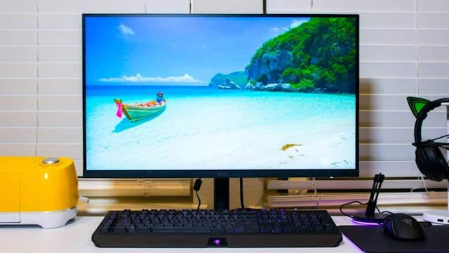
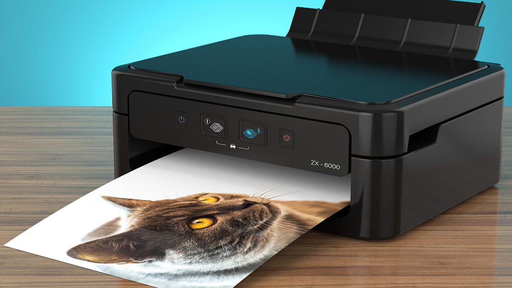

An output device is any piece of computer hardware equipment which converts information into human readable form. It can be text, graphics, tactile, audio, and video.
Computer monitor is an output device that displays information in
pictorial form.
There are mainly two types of monitor:
1) LCD (Liquid Crystal Display) Monitor
2) CRT (Cathode Ray Tube) Monitor
In computing, a printer is a peripheral machine which makes a persistent representation of graphics or text, usually on paper. While most output is human-readable, bar code printers are an example of an expanded use for printers. The different types of printers include 3D printer, inkjet printer, laser printer, thermal printer, etc.
